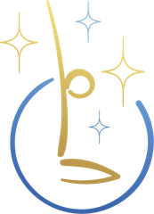

L’agenda en ligne
Pour promouvoir vos événements auprès de toute la communauté.

 Adhérer
Adhérer
En devenant membre, vous soutenez nos actions et participez activement à diffuser le Kundalini Yoga en France. Enseignant·e diplômé·e, formateur·ice, pratiquant·e régulier·e, débutant·e ou en formation : il y a une adhésion pour vous.
L’adhésion vous offre l’occasion de vous impliquer dans la vie de la Fédération et de rester informé·e de l’actualité de votre pratique.
Pour promouvoir vos événements auprès de toute la communauté.
Participation aux assemblées générales et droit de vote.

Mise à jour de vos informations et publication de vos cours sur la carte.

Newsletters, tarifs préférentiels sur les événements et occasions de séva.

Pratiquant·e débutant·e, régulier·e ou en formation : vous soutenez l’action de la FFKY, recevez ses informations, profitez de tarifs préférentiels et accédez au cours de la FFKY du dimanche.
5 € pour une année
Voir la formule ÉlèveDiplômé·e de KRI : vos cours sur la carte et sur les réseaux, l’agenda pour vos événements, et en option l’assurance GAN (responsabilité civile, dommages corporels, salles d’activités). En fin de formation, dans l’attente du diplôme, adhérez comme pratiquant·e.
50 €, ou 108 € avec assurance
Voir les formules Enseignant·e
Vous animez des formations de Kundalini Yoga : la formule Formateur·ice reprend tous les avantages de la formule Initié·e, assurance comprise, et ajoute la promotion de vos formations sur le site et les réseaux sociaux.
150 € pour une année
Voir la formule Formateur·iceLe contrat GAN de la FFKY ouvre aux associations locales de pratique et d’enseignement une assurance responsabilité civile, individuelle accident, recours-protection juridique et assistance-rapatriement. L’assurance de l’association se souscrit en ligne par un·e enseignant·e diplômé·e.
tarif et parcours Association à confirmer
Assurer une association5 € / an
50 € / an
108 € / an
150 € / an
Tarifs repris de la page Adhérer actuelle. Pour une adhésion complète, les enseignant·es envoient leur diplôme KRI. Les boutons mènent au parcours d’adhésion en place. parcours de paiement : chantier espace adhérent
L’Assemblée Générale de mai a voté de demander à l’ensemble des enseignant·es de faire adhérer leurs élèves : 5 € par an et par élève. Une participation modeste individuellement, précieuse collectivement, pour :
Ils adhèrent en ligne, téléchargent leur attestation et vous la transmettent. Informations demandées : nom et prénom civils de l’enseignant·e, nom spirituel (facultatif), école ou association, ville.
Votre structure réalise et règle l’adhésion de chaque élève, avec ses nom, prénom et adresse e-mail : chaque élève reçoit ainsi les informations de la Fédération à son nom.
Une question ? info@ffky.fr
Le contrat souscrit par la FFKY auprès du GAN comprend une responsabilité civile, individuelle accident, recours-protection juridique et assistance-rapatriement. Vous en bénéficiez en y souscrivant lors de votre adhésion, comme enseignant·e ou comme pratiquant·e.
L’assurance vous couvre dans chacune des associations où vous enseignez.
Vous restez assuré·e comme pratiquant·e. Vos cours apparaissent sur la carte dès réception du scan de votre diplôme par le secrétariat et de votre cotisation à jour.
Choisissez « Association » et réglez l’assurance en ligne. Cette démarche est réservée aux enseignant·es diplômé·es.
Les adhérent·es bénéficient d’une offre négociée sur leur RC Pro : 270 € par an (tarif standard : 360 €). Contactez Olivier Fage, correspondant GAN : pontault-gare@gan.fr. 270 € (article de rentrée) ou 10 % (page Adhérer) : à confirmer
Imprimez-la depuis votre espace adhérent, rubrique « Mon attestation d’assurance ».
Reconnues comme complémentaires au Kundalini Yoga, ces activités sont couvertes pour les adhérent·es assuré·es, lorsqu’elles sont organisées par une structure associative qui reçoit le paiement.
Un don, du montant de votre choix, nourrit les projets de la Fédération : festival, cours en ligne, traductions, nouveau site.
Une question sur les adhésions, l’assurance ou vos documents ? Écrivez-nous : nous vous accompagnons dans votre parcours avec la FFKY.